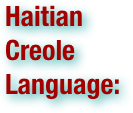
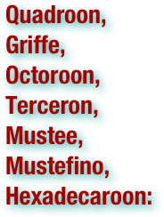
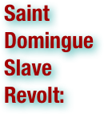

The Haitian Revolution: Terms
.pdf (. . . )


Abolitionism is a movement to end slavery. In western Europe and the Americas abolitionism was a movement to end the slave trade and set slaves free. At the behest of Dominican priest Bartolomé de las Casas who was shocked at the treatment of natives in the New World, Spain enacted the first European law abolishing colonial slavery in 1542, although it was not to last (to 1545). In the 17th century, Quaker and evangelical religious groups condemned it as un-Christian; in the 18th century, rationalist thinkers of the Enlightenment criticized it for violating the rights of man. Though anti-slavery sentiments were widespread by the late 18th century, they had little immediate effect on the centers of slavery: the West Indies, South America, and the Southern United States. The Somersett's case in 1772 that emancipated slaves in England, helped launch the movement to abolish slavery. Pennsylvania passed An Act for the Gradual Abolition of Slavery in 1780. Britain banned the importation of African slaves in its colonies in 1807, and the United States followed in 1808. Britain abolished slavery throughout the British Empire with the Slavery Abolition Act 1833, the French colonies abolished it 15 years later, while slavery in the United States was abolished in 1865 with the 13th Amendment to the U.S. Constitution. (wikipedia.org. Accessed August 2, 2011.)

"Affranchi" is a former French legal term denoting a freedman or emancipated slave. It is used in English to describe the class of freedmen in Saint-Domingue and other slave-holding French territories, who held legal rights intermediate between those of free whites and enslaved people of color. In Saint-Domingue, roughly half of the affranchis were gens de couleur libres (freed people of mixed race) and the other half freed blacks. The term comes from the French word for emancipation — affranchissement, or enfranchisement in terms of political rights. Ironically, however, the affranchis were barred the actual franchise (voting) prior to a 1791 court case whose decision in their favor prompted a backlash from the French planter class which sparked the Haitian Revolution. The term affranchi was also used loosely to refer pejoratively to any free person of color, even those born free (for example, a mixed-race child born to a white mother.) The affranchis had legal and social advantages over enslaved Africans and became a distinct class in the society between whites and slaves. They could get some education, were able to own land, and could attend some French colonial entertainments. Sons of planters especially tended to share in advantages of class and property, and they considered themselves above the petits blancs, shopkeepers and workers who nonetheless had more political rights. The colonists passed so many restrictions that the affranchis were limited as a separate caste: they could not vote or hold colonial administrative posts, or work as doctors or lawyers. They were also forbidden to wear the style of clothes favored by the wealthy white colonists. In spite of the disadvantages, many educated affranchis identified themselves culturally with France rather than with the enslaved population. A class in between, the free people of color sometimes had tensions with both whites and enslaved Africans. Ambitious mulattoes sometimes distanced themselves from their African roots in an attempt to gain acceptance from the white colonists. As they advanced in society, affranchis also held land and slaves. Some acted as creditors for planters. One of their leaders, the indigo planter Julien Raimond, claimed that affranchis owned a third of all the slaves in the colony. In the early years of the French Revolution and Haitian Revolution, many gens de couleur were committed to maintaining the institution of slavery, although they wanted political equality for men of property, regardless of skin color. (wikipedia.org. Accessed August 2, 2011.)

The Arawak people (from aru, the Lucayan word for cassava flour) are some of the indigenous peoples of the West Indies. The group belongs to the Arawakan language family. They were the natives whom Christopher Columbus encountered when he first landed in the Americas in 1492. The Spanish described them as a peaceful primitive people. The Arawak people include the Taíno, who occupied the Greater Antilles and the Bahamas (Lucayans); the Nepoya and Suppoya of Trinidad, and the Igneri, who were supposed to have preceded the Caribs in the Lesser Antilles, together with related groups (including the Lucayans) which lived along the eastern coast of South America, as far south as what is now Brazil. (wikipedia.org. Accessed August 2, 2011.)

The Atlantic slave trade, also known as the transatlantic slave trade, refers to the trade in slaves that took place across the Atlantic ocean from the sixteenth through to the nineteenth centuries. The vast majority of slaves involved in the Atlantic trade were Africans from the central and western parts of the continent, who were sold by African slave dealers to European traders, who transported them to the colonies in North and South America. There, the slaves were made to labor on coffee, cocoa, cotton and sugar plantations, in gold and silver mines, in rice fields, the construction industry, timber, and shipping or in houses to work as servants.The shippers were, in order of scale, the Portuguese, the British, the French, the Spanish, the Dutch, and Americans. The traders had outposts on the African coast where they purchased people from African slave-traders. Current estimates are that about 12 million although the actual number of people taken from their homes is considerably higher. The slave trade is sometimes called the Maafa by African and African-American scholars, meaning "holocaust" or "great disaster" in Swahili. Some scholars, such as Marimba Ani and Maulana Karenga use the terms African Holocaust or Holocaust of Enslavement. Slavery was one element of a three-part economic cycle — the triangular trade and its Middle Passage — which ultimately involved four continents, four centuries and millions of people. (wikipedia.org. Accessed August 2, 2011.)

A blockade is an effort to cut off food, supplies, war material or communications from a particular area by force, either in part or totally. A blockade should not be confused with an embargo or sanctions, which are legal barriers to trade, and is distinct from a siege in that a blockade is usually directed at an entire country or region, rather than a fortress or city. Most blockades historically took place at sea, with the blockading power seeking to cut off all maritime transport from and to the blockaded country; although stopping all land transport to and from an area may also be considered a blockade. In the 20th century air power has also been used to enhance the effectiveness of the blockade by halting all air traffic within the blockaded air space. Close patrol of the hostile ports, in order to prevent naval forces from putting to sea, is also referred to as a blockade. When a coastal cities or fortresses were besieged from the landward side, the besiegers would often blockade the seaward side as well. Most recently, blockades have sometimes included cutting off electronic communications by jamming radio signals and severing undersea cables. Israel and its blockade of the Gaza Strip since 2001 has received the most attention as a continuing crisis. (wikipedia.org. Accessed August 2, 2011.)

The buccaneers were privateers who attacked Spanish shipping in the Caribbean Sea during the late 17th century. The term buccaneer is now used generally as a synonym for pirate. Originally, buccaneer crews were larger, more apt to attack coastal cities, and more localized to the Caribbean than later pirate crews who sailed to the Indian Ocean on the Pirate Round in the late 17th century. (wikipedia.org. Accessed August 2, 2011.)

Cap-Haïtien (Okap or Kapayisyen in Kréyòl) is a city of about 190,000 people on the north coast of Haiti. Previously, named as Cap-Français, Cap-Henri, and le Caps, it was an important city during the colonial period, serving as the capital of the French Colony of Saint-Domingue from the city`s formal foundation in 1711 until 1770 when the capital was moved to Port-au-Prince, and was also the first capital of the Kingdom of Northern Haiti under King Henri Christophe. (wikipedia.org. Accessed August 2, 2011.)

The Caribbean is a region consisting of the Caribbean Sea, its islands (most of which are enclosed by the sea), and the surrounding coasts. The region is located southeast of the Gulf of Mexico and North America, east of Central America, and to the north of South America. Situated largely on the Caribbean Plate, the region comprises more than 7,000 islands, islets, reefs, and cays. These islands, called the West Indies, generally form island arcs that delineate the eastern and northern edges of the Caribbean Sea. These islands are called the West Indies because when Christopher Columbus landed there in 1492 he believed that he had reached to the west of The India (The Indian sub-continent). The region consists of the Antilles, divided into the larger Greater Antilles which bound the sea on the north, the Lesser Antilles on the south and east (including the Leeward Antilles), the Bahamas, and the Turks and Caicos Islands or the Lucayan Archipelago, which are in fact in the Atlantic Ocean north of Cuba, not in the Caribbean Sea. Geopolitically, the West Indies are usually regarded as a subregion of North America and are organized into 30 territories including sovereign states, overseas departments, and dependencies. From January 3, 1958, to May 31, 1962, there was a short-lived country called the Federation of the West Indies composed of ten English-speaking Caribbean territories, all of which were then UK dependencies. The West Indies cricket team continues to represent many of those nations. (wikipedia.org. Accessed August 2, 2011.)

The Code noir (Black Code) was a decree passed by France's King Louis XIV in 1685. The Code Noir defined the conditions of slavery in the French colonial empire, restricted the activities of free Negroes, forbade the exercise of any religion other than Roman Catholicism, and ordered all Jews out of France's colonies. The code has been described by Tyler Stovall as "one of the most extensive official documents on race, slavery, and freedom ever drawn up in Europe." (wikipedia.org. Accessed August 2, 2011.)

Colonialism is the establishment, maintenance, acquisition and expansion of colonies in one territory by people from another territory. It is a process whereby sovereignty over the colony is claimed by the metropole and the social structure, government, and economics of the colony are changed by colonists - people from the metropole. Colonialism is a set of unequal relationships: between the metropole and the colony, and between the colonists and the indigenous population. The colonial period normally refers to a period of history from the late 15th to the 20th century when European nation states established colonies on other continents. During this time, the justifications for colonialism included various factors such as the profits to be made, the expansion of the power of the metropole and various religious and political beliefs. Colonialism and imperialism were ideologically linked with mercantilism. (wikipedia.org. Accessed August 2, 2011.)

The term Creole and its cognates in other languages — such as crioulo, criollo, créole, kriolu, criol, kreyol, kreol, kriulo, kriol, krio, etc. — have been applied to people in different countries and epochs, with rather different meanings. Those terms are almost always used in the general area of present or former colonies in other continents, and originally referred to locally born people with foreign ancestry. (wikipedia.org. Accessed August 2, 2011.)

The Declaration of the Rights of Man and of the Citizen is a fundamental document of the French Revolution, defining the individual and collective rights of all the estates of the realm as universal. Influenced by the doctrine of natural right, the rights of man are universal: valid at all times and in every place, pertaining to human nature itself. Although it establishes fundamental rights for French citizens and "all the members of the social Body", it addresses neither the status of women nor slavery; despite that, it is a precursor document to international human rights instruments. (wikipedia.org. Accessed August 2, 2011.)

The French Revolution (1789–1799) was a period of radical social and political upheaval in French and European history. The absolute monarchy that had ruled France for centuries collapsed in three years. French society underwent an epic transformation as feudal, aristocratic and religious privileges evaporated under a sustained assault from left-wing political groups and the masses on the streets. Old ideas about hierarchy and tradition succumbed to new Enlightenment principles of citizenship and inalienable rights. The French Revolution began in 1789 with the convocation of the Estates-General in May. The first year of the Revolution witnessed members of the Third Estate proclaiming the Tennis Court Oath in June, the assault on the Bastille in July, the passage of the Declaration of the Rights of Man and of the Citizen in August, and an epic march on Versailles that forced the royal court back to Paris in October. The next few years were dominated by tensions between various liberal assemblies and a right-wing monarchy intent on thwarting major reforms. A republic was proclaimed in September 1792 and King Louis XVI was executed the next year. External threats also played a dominant role in the development of the Revolution. The French Revolutionary Wars started in 1792 and ultimately featured spectacular French victories that facilitated the conquest of the Italian peninsula, the Low Countries and most territories west of the Rhine – achievements that had defied previous French governments for centuries. Internally, popular sentiments radicalized the Revolution significantly, culminating in the rise of Maximilien Robespierre and the Jacobins and virtual dictatorship by the Committee of Public Safety during the Reign of Terror from 1793 until 1794 during which between 16,000 and 40,000 people were killed. After the fall of the Jacobins and the execution of Robespierre, the Directory assumed control of the French state in 1795 and held power until 1799, when it was replaced by the Consulate under Napoleon Bonaparte. The modern era has unfolded in the shadow of the French Revolution. The growth of republics and liberal democracies, the spread of secularism, the development of modern ideologies and the invention of total war all mark their birth during the Revolution. Subsequent events that can be traced to the Revolution include the Napoleonic Wars, two separate restorations of the monarchy and two additional revolutions as modern France took shape. In the following century, France would be governed at one point or another as a republic, constitutional monarchy and two different empires (the First and Second). (wikipedia.org. Accessed August 2, 2011.)


Haitian Creole language, often called simply Creole or Kreyòl, is a language spoken in Haiti by about twelve million people, which includes all Haitians in Haiti and via emigration, by about two to three million speakers residing in the Bahamas, Cuba, Canada, France, Cayman Islands, French Guiana, Martinique, Guadeloupe, Belize, Puerto Rico, Dominican Republic, Ivory Coast, Venezuela, and United States. Haitian Creole is one of Haiti's two official languages, along with French. It is a creole based largely on 18th to 21st-century French, some African languages, as well as Arabic, Spanish, Taíno, and English. (wikipedia.org. Accessed August 2, 2011.)

The Dominican Republic is a nation on the island of Hispaniola, part of the Greater Antilles archipelago in the Caribbean region. The western third of the island is occupied by the nation of Haiti, making Hispaniola one of two Caribbean islands that are shared by two countries. Both by area and population, the Dominican Republic is the second largest Caribbean nation (after Cuba), with 48,442 square kilometers (18,704 sq. mi) and an estimated 10 million people. (wikipedia.org. Accessed August 2, 2011.)

Gens de couleur is a French term meaning "people of color." The term was commonly used in France's West Indian colonies prior to the abolition of slavery, where it was a short form of gens de couleur libres ("free people of color"). Prior to the Haitian Revolution, Saint-Domingue was legally divided into three distinct groups: free whites (who were divided socially between the plantation-class grands blancs and the working-class petits blancs), freedmen (affranchis), and slaves. In addition, marrons (runaway slaves) were sometimes able to establish small communities in the mountains, along with remnants of Haiti's original Taino people. After slavery ended in the colony, there were approximately 28,000 anciens libres ("former free") in Haiti. The term was used to distinguish those who were already free, compared to those liberated by the general emancipation of 1793. About 12,000 of these anciens libres were black slaves who had either purchased their freedom or had received it from their masters for one reason or another. Those remaining were the free people of color: métis ("people of mixed race"), usually born of French men and slave women. These free men were known as gens de couleur libres to distinguish them both from the former black freedmen and those mulattos who had remained slaves. Regardless of their color, freedmen could own plantations and often owned large numbers of slaves themselves. The slaves were generally not friendly with the freedmen, who sometimes portrayed themselves as bulwarks against a slave uprising. As property owners themselves, freedmen sought very distinct lines set between their own class and that of slaves. Often working as artisans, shopkeepers or landowners, the gens de couleur frequently became quite prosperous, and many prided themselves on their European culture and descent. They were often well-educated in the French language, as distinct from the scorned Haitian Creole language used by slaves. Most gens de couleur were Roman Catholic, and many denounced the Vodoun religion originating in Africa. Under the ancien régime, despite the provisions of equality nominally established in the Code Noir, the gens de couleur were limited in their freedoms and did not possess the same rights as white Frenchmen. Nevertheless most were pro-slavery, at least up to the time of the French Revolution. Equal rights for free people of color became an early central issue of the Haitian Revolution, although the struggle within Haiti between the gens de couleur led by Julien Raimond and the black Haitians led by Toussaint Louverture devolved into the War of the Knives. After their loss in that conflict, many wealthy gens de couleur left as refugees to France, Cuba, Puerto Rico, Louisiana, and elsewhere. Others, however, remained to play an influential role in Haitian politics. (wikipedia.org. Accessed August 2, 2011.)


Haiti, officially the Republic of Haiti is a Caribbean country. It occupies the western, smaller portion of the island of Hispaniola, in the Greater Antillean archipelago, which it shares with the Dominican Republic. Ayiti (land of high mountains) was the indigenous Taíno or Amerindian name for the island. The country's highest point is Pic la Selle, at 2,680 meters (8,793 ft). The total area of Haiti is 27,750 square kilometers (10,714 sq. mi) and its capital is Port-au-Prince. Haitian Creole and French are the official languages. Haiti's regional, historical, and ethno-linguistic position is unique for several reasons. It was the first independent nation in Latin America and the first black-led republic in the world when it gained independence as part of a successful slave revolution in 1804.[6] Despite having common cultural links with its Hispano-Caribbean neighbors, Haiti is the only predominantly Francophone independent nation in the Americas. It is one of only two independent nations in the Americas (along with Canada) that designate French as an official language; the other French-speaking areas are all overseas départements, or collectivités, of France. Haiti is the poorest country in the Americas as per the Human Development Index. It has experienced political violence throughout its history. Most recently, in February 2004, an armed rebellion forced the resignation and exile of previous President Jean-Bertrand Aristide, and a provisional government took control with security provided by the United Nations Stabilization Mission in Haiti (MINUSTAH). (wikipedia.org. Accessed August 2, 2011.)

The Haitian Revolution (1791–1804) was a period of conflict in the French colony of Saint-Domingue, which culminated in the elimination of slavery there and the founding of the Haitian republic. Although hundreds of rebellions occurred in the New World during the centuries of slavery, only the St. Domingue Slave Revolt, which began in 1791, was successful in achieving permanent independence under a new nation. The Haitian Revolution is regarded as a defining moment in the history of Africans in the New World. Although an independent government was created in Haiti, its society continued to be deeply affected by the patterns established under French colonial rule. The French established a system of minority rule over the illiterate poor by using violence and threats. Because many planters had provided for their mixed-race children by African women by giving them education and (for men) training and entrée into the French military, the mulatto descendants became the elite in Haiti after the revolution. By the time of war, many had used their social capital to acquire wealth, and some already owned land. Some had identified more with the French colonists than the slaves, and associated within their own circles. Their domination of politics and economics after the revolution created another two-caste society, as most Haitians were rural subsistence farmers. In addition, the nascent state's future was practically "mortgaged" to French banks in the 1820s, as it was forced to make massive reparations to French slaveholders in order to receive French recognition and end the nation's political and economic isolation. These payments permanently affected Haiti's economy and wealth. (wikipedia.org. Accessed August 2, 2011.)

In societies that regard some races of people as dominant or superior and others as subordinate or inferior, hypodescent is the automatic assignment of children of a mixed union or mating between members of different socioeconomic groups or ethnic groups to the minority group. The opposite practice is hyperdescent, in which children are assigned to the race that is considered dominant or superior. Parallel practices include agnatic descent and cognatic descent, which assign race according to the father or mother, respectively, without regard to the race of the other parent. Since either parent (or both) might be of mixed-race, hypo- and hyper-descent can operate in tandem with, or separately from, a system of agnatic or cognatic racial assignment. (wikipedia.org. Accessed August 2, 2011.)

Maroons (from the word marronage or American/Spanish cimarrón: "fugitive, runaway", lit. "living on mountaintops"; from Spanish cima: "top, summit") were runaway slaves in the West Indies, Central America, South America, and North America, who formed independent settlements together. The same designation has also become a derivation for the verb marooning. (wikipedia.org. Accessed August 2, 2011.)

A Métis is a person born to parents who belong to different groups defined by visible physical differences, regarded as racial, or the descendant of such persons. The term is of French origin, and also is a cognate of mestizo in Spanish, mestiço in Portuguese, and mestee in English. In the Western Hemisphere, this term usually is used to describe someone born or descended from the union of a European and an Amerindian. However, the term was used by other groups around the world, mostly in countries which were under French influence, such as Vietnam. It is still commonly used by Francophones today for any multiracial person. A similar word, Mestee is derived from Middle French Mestis (pronounced the same), which became Métis in modern French. This is cognate to the words mestizo in Spanish and mestiço in Portuguese. All of these words are ultimately derived from Latin mixtus, meaning "mixed". Many dictionaries, however, incorrectly attribute the word "Mestee" to a corruption of mestizo. (wikipedia.org. Accessed August 2, 2011.)

Mulatto denotes a person with one white parent and one black parent, or more broadly, a person of mixed black and white ancestry. Contemporary usage of the term varies greatly, and the broader sense of the term makes its application rather subjective, as not all people of mixed white and black ancestry choose to self-identify as mulatto. Some reject the term because of its association with slavery and colonial and racial oppression, preferring terms such as "mixed", "biracial", and "African-American" (in the United States). Mulattos may also be an admixture of Native American, South American native and African Americans according to Henings Statutes of Virginia 1705, which reads as follows: "And for clearing all manner of doubts which hereafter may happen to arise upon the construction of this act, or any other act, who shall be accounted a mulatto, Be it enacted and declared, and it is hereby enacted and declared, That the child of an Indian and the child, grand child, or great grand child, of a negro shall be deemed, accounted, held and taken to be a mulatto." However, today those who are mixtures of Indigenous peoples of the Americas and Black Africans are called Zambos while those who are mixtures of African American and Native American are called Black Indians and sometimes are solely classified or identify as African American. (wikipedia.org. Accessed August 2, 2011.)

The New World is one of the names used for the Western Hemisphere, specifically America and sometimes Oceania (Australasia). The term originated in the late 15th century, when America had been recently discovered by European explorers, expanding the geographical horizon of the people of the European middle Ages, who had thought of the world as consisting of Europe, Asia, and Africa: collectively now referred to as the Old World. (wikipedia.org. Accessed August 2, 2011.)

Nord (English: North, Haitian Creole: Nò) is one of the ten departments of Haiti. It has an area of 2,106 km² and a population of 872,200 (2002). Its capital is Cap-Haïtien. . . In 1789 the Nord Department on the northern shore was the most fertile area with the largest sugar plantations. It was an area of vast economic importance. Here most of the slaves lived in relative isolation, separated from the rest of the colony by a high mountain range known as the Massif. This area was a stronghold of the wealthy planters who wanted greater autonomy for the colony, especially economically, so they could do as they pleased. Although the slaves were not expected to participate in a rebellion, suddenly on August 22, 1791, a great slave uprising plunged the country into civil war. Thousands of slaves in the fertile Nord Department region rose up to take vengeance on their masters and to fight for their liberty. Within the next ten days slaves had taken control of the entire northern province in an unprecedented slave revolt that left the whites controlling only a few isolated fortified camps. Within the next two months as the violence escalated, the rebelling slaves killed 2,000 whites and burned or destroyed 280 sugar plantations. Within a year the island was in revolutionary chaos. Slaves burnt the plantations where they had been forced to work, and killed masters, overseers and other whites. This was the beginning of the Haitian Revolution. In 1804, Haiti declared itself a free republic but civil war broke out in the north under the leadership of Henri Christophe. Christophe declared the northern dominion a kingdom in 1811 and crowned himself King Henry I of Haiti. In 1820, King Henry committed suicide after suffering a stroke that resulted in his lose control of the army and therefore his power. The kingdom was claimed by Jean Pierre Boyer, then the appointed president of Haiti, on October 26, 1820 after he captured Cap Haïtien by military force. Haiti became a single nation again. (wikipedia.org. Accessed August 2, 2011.)

Ouest (English: West, Haitian Creole: Lwès) is one of the ten departments of Haiti. It is the jurisdictional seat of the national capital, the city of Port-au-Prince. It has an area of 4,827 square kilometers (1,864 sq. mi) and a population of 3,093,698 (2003 Census). It borders the Dominican Republic to the east. It is the second largest department in Haiti after the department of Artibonite. Gonâve Island is also part of the Ouest Department. The department's stretch of coastline lies entirely in the Gulf of Gonâve. (wikipedia.org. Accessed August 2, 2011.)

Patois is any language that is considered nonstandard, although the term is not formally defined in linguistics. It can refer to pidgins, creoles, dialects, and other forms of native or local speech, but not commonly to jargon or slang, which are vocabulary-based forms of cant. Class distinctions are embedded in the term, drawn between those who speak patois and those who speak the standard or dominant language used in literature and public speaking, i.e., the "acrolect". (wikipedia.org. Accessed August 2, 2011.)

A plantation is a large artificially established forest, farm or estate, where crops are grown for sale, often in distant markets rather than for local on-site consumption. The term plantation is informal and not precisely defined. Crops grown on plantations include fast-growing trees (often conifers), cotton, coffee, tobacco, sugar cane, sisal, some oil seeds (notably oil palms) and rubber trees. Farms that produce alfalfa, Lespedeza, clover, and other forage crops are usually not called plantations. The term "plantation" has usually not included large orchards (except for banana plantations), but does include the planting of trees for lumber. A plantation is always a monoculture over a large area and does not include extensive naturally occurring stands of plants that have economic value. Because of its large size, a plantation takes advantage of economies of scale. Protectionist policies and natural comparative advantage have contributed to determining where plantations have been located. Among the earliest examples of plantations were the latifundia of the Roman Empire, which produced large quantities of wine and olive oil for export. Plantation agriculture grew rapidly with the increase in international trade and the development of a worldwide economy that followed the expansion of European colonial empires. Like every economic activity, it has changed over time. Earlier forms of plantation agriculture were associated with large disparities of wealth and income, foreign ownership and political influence, and exploitative social systems such as indentured labor and slavery. The history of the environmental, social and economic issues relating to plantation agriculture are covered in articles that focus on those subjects. (wikipedia.org. Accessed August 2, 2011.)


Quadroon is a racial category of hypodescent used to describe a person of mixed-race with a quarter African and three-quarters Caucasian ancestry. In Australia, the same term refers to the proportion of Aboriginal and Caucasian ancestry. Griffe has been the usual term for someone of ¾ African heritage, or the child of a mulatto parent and a fully black parent. The family heritage of a quadroon is one biracial (mulatto) parent (African/Aboriginal and Caucasian) and one Caucasian parent; in other words, one African/Aboriginal grandparent and three Caucasian grandparents. Octoroon refers to a person with one-eighth African ancestry; that is, someone with family heritage of one biracial grandparent, in other words, one African great-grandparent and seven Caucasian great-grandparents. Terceron is a term synonymous with "octoroon," derived from being three generations of descent from an African ancestor (great-grandparent). Mustee also refers to a person with one-eighth African ancestry; Mustefino or quintroon or hexadecaroon refers to a person with one-sixteenth African ancestry. . . The word quadroon is borrowed from the Spanish cuarterón which has its roots in the Latin quartus, which means "fourth". This racial designation refers specifically to the number of full-blooded African ancestors, emphasizing the quantitative least. The word octoroon is rooted in the Latin octo, which means "eight," based on quadroon. (wikipedia.org. Accessed August 2, 2011.)


Saint-Domingue was a French colony on the Caribbean island of Hispaniola from 1659 to 1804, when it became the independent nation of Haiti. Saint-Domingue is the French version of the Spanish name Santo Domingo. The Arawak, Carib and Tainos people occupied the island before the arrival of the Spaniards. When Christopher Columbus took possession of the island on December 5, 1492, he named it La Española, meaning "The Spanish (Island)". The Latin translation Hispaniola was soon in common use. Spain controlled the entire island of Hispaniola (also called Santo Domingo or San Domingo) from the 1490s until the 17th century, when French pirates began to establish bases on the western portions of the island. In the Treaty of Ryswick in 1697, Spain formally recognized French control of the western third of the island. Spain called the island Santo Domingo. The western part of Hispaniola being neglected by the Spanish colonists, French buccaneers settled there, first on the Ile de la Tortue (Tortuga, Tortoise), then on Grande Terre (mainland West Hispaniola). French called the western part Saint-Domingue. In 1804, the western portion of Saint-Domingue became the independent nation of Haïti. The eastern portion, later returned to Spain, ultimately became the Dominican Republic. (wikipedia.org. Accessed August 2, 2011.)

The Saint-Domingue expedition was a French military expedition sent by Napoleon Bonaparte, then First Consul, under his brother-in-law Charles Victor Emmanuel Leclerc in an attempt to regain French control of the island of Saint-Domingue and curtail the measures of independence taken by the former slave Toussaint Louverture. It landed in December 1801 and, after initial success, ended in a French defeat at the battle of Vertières and the departure of French troops in December 1803. (wikipedia.org. Accessed August 2, 2011.)


The Saint Domingue Slave Revolt took place in August 1791 as a result of unrest between the some 465,000 slaves and 30,000 whites in Saint-Domingue, now known as Haiti. Under French rule, St. Domingue was considered the most crucial of the French colonies because of its revenue in exports. With impending Revolution on the home front, France's government did not see the mass enslavement and outnumbering blacks in the colonies as a major problem. This changed one August night in 1791 when slaves were inspired by a slogan urging, "Listen to the voice of Liberty which speaks in the hearts of all." What followed was a massive uprising led by fellow slave Toussaint Louverture (1743-1803), who would later become governor of St. Domingue. To bring an end to the revolt the Legislative Assembly of Paris offered rights to the slaves which made the white peasants and merchants of the colonies unhappy as well. Later on in 1793, the unhappy whites signed a treaty of sovereignty with Great Britain, France's now opposing force in war. With Great Britain now involved, Spain entered the war and sided with the English against the French. The Spanish later offered the slave rebels individual rights if they fought with them. Now joined in war, the Spanish army and the slave uprising had little trouble convincing the greatly outnumbered French army to free the slaves two years after the revolt had began. This happened without the French government's say, but slavery was officially abolished in the colonies in February 1794 by the National Convention. (wikipedia.org. Accessed August 2, 2011.)

Slavery is a system under which people are treated as property and are forced to work. Slaves can be held against their will from the time of their capture, purchase or birth, and deprived of the right to leave, to refuse to work, or to demand compensation. Conditions that can be considered slavery include debt bondage, indentured servitude, serfdom, domestic servants kept in captivity, adoption in which children are effectively forced to work as slaves, child soldiers, and forced marriage. Slavery predates written records, has existed in many cultures. The number of slaves today is higher than at any point in history, remaining as high as 12 million to 27 million, though this is probably the smallest proportion of the world's population in history. Most are debt slaves, largely in South Asia, who are under debt bondage incurred by lenders, sometimes even for generations. Human trafficking is primarily for prostituting women and children into sex industries. (wikipedia.org. Accessed August 2, 2011.)

Sud (English: South, Haitian Creole: Sid) is one of the ten departments of Haiti. It has an area of 2,794 square kilometers (1,079 sq mi) and a population of 745,000 (2002). Its capital is Les Cayes. A large part of the population of Haitians in this department is of mixed race, mulattoes along with other mixtures such as Arabs and East Indians. These southern parts of Haiti are where many resident Europeans descended to during tense political turmoil and, in more recent years, have returned and settled alongside black Haitians (mostly white European men and black Haitian women). Nowadays, this area of the country has become one of the most racially diverse (excluding Port-au-Prince). (wikipedia.org. Accessed August 2, 2011.)

The Taínos were pre-Columbian inhabitants of the Bahamas, Greater Antilles, and the northern Lesser Antilles. It is thought that the seafaring Taínos are relatives of the Arawak people of South America. The Taíno language is a member of the Arawakan language family, which ranges from South America across the Caribbean. At the time of Columbus's arrival in 1492, there were five Taíno chiefdoms and territories on Hispaniola (modern day Haiti and Dominican Republic), each led by a principal Cacique (chieftain), to whom tribute was paid. Puerto Rico, also, was divided into chiefdoms. As the hereditary head chief of Taíno tribes, the cacique was paid significant tribute. Caciques enjoyed the privilege of wearing golden pendants called guanin, living in square bohíos instead of the round ones that the villagers inhabited, and sitting on wooden stools when receiving guests. At the time of the Spanish conquest, the largest Taíno population centers may have contained over 3,000 people each. The Taínos were historically enemies of the neighboring Carib tribes, another group with origins in South America who lived principally in the Lesser Antilles. The relationship between the two groups has been the subject of much study. For much of the 15th century, the Taíno tribe was being driven to the northeast in the Caribbean (out of what is now South America) because of raids by Caribs. Many Carib women spoke Taíno because of the large number of female Taíno captives among them. By the 18th century, Taíno society had been devastated by introduced diseases such as smallpox, as well as other factors such as intermarriages and forced assimilation into the plantation economy that Spain imposed in its Caribbean colonies, with its subsequent importation of African slave workers. The first recorded smallpox outbreak in Hispaniola occurred in December 1518 or January 1519. It is argued that there was substantial mestizaje (racial and cultural mixing) as well as several Indian pueblos that survived into the 19th century in Cuba. The Spaniards who first arrived in the Bahamas, Cuba, and Hispaniola in 1492, and later in Puerto Rico, did not bring women. They took Taíno women for their wives, which resulted in mestizo children. (wikipedia.org. Accessed August 2, 2011.)

Haitian Vodou (also written as Vodun, Vodoun or Voodoo) is a syncretic religion that originates in the Caribbean country of Haiti. It is based upon a merging of the beliefs and practices of West African peoples (mainly the Fon and Ewe; see West African Vodun), with Arawakian religious beliefs, and Roman Catholic Christianity. Vodou was created by African slaves who were brought to Haiti in the 16th century and still followed their traditional African beliefs, but were forced to convert to the religion of their slavers. Practitioners are commonly described as Vodouisants. (wikipedia.org. Accessed August 2, 2011.)

The War of Knives alludes to the conflict between the Haitian revolutionary Toussaint L'Ouverture, a Black, and his adversary André Rigaud, a mulatto, from June 1799 to March 1800. These men fought over control of Haiti after defeating foreign forces. Rigaud won a significant victory over the British invasion, and Toussaint was of a superior rank in the French Army. This left both individuals with a right to claim leadership, however priority was given to Toussaint by the majority. Rigaud refused to recognize the appointment, and so began the “War of Knives”. (wikipedia.org. Accessed August 2, 2011.)